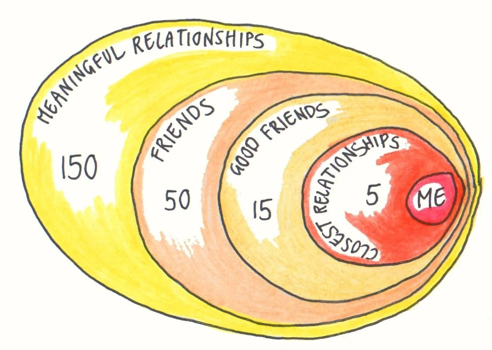
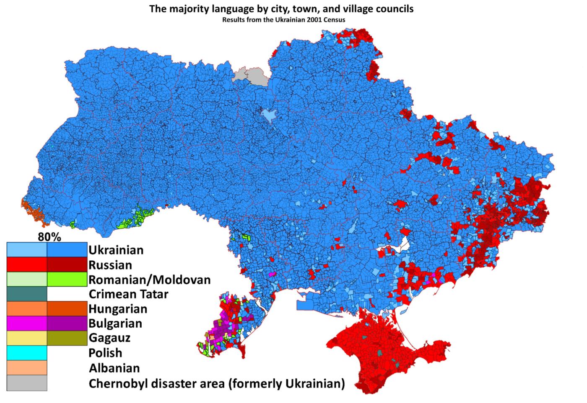

Nationalism
PSCI 2227: War and State Development
March 25, 2026
Recap
Last time. Individual effects of civil war violence on political participation.
- Blattman’s “natural experiment” in Uganda
- Higher voting + political involvement among former abductees
- No similar increase in community involvement or decrease in antisocial behavior
Today. Staying at the individual level, but with a new outcome of interest — nationalism as an ideology and organizing principle.
From state to society
Scope of concern
If you’re not a sociopath, you probably care about the people you know

… a small group compared to a city, let alone a country
The group size paradox
Think back to Olson
Key characteristics of large projects like national defense
- Diffuse benefits — everyone gains, even if they don’t contribute
- Concentrated costs — only paid by contributors
Large group size \(\leadsto\) the difference any one contributor makes is trivial
So we shouldn’t expect large societies to coordinate collective efforts
… and yet they do (at least sometimes)
The leviathan solution
Again back to Olson — monitoring and punishment by a stationary bandit
- Public projects require tax dollars
- If you don’t pay taxes, the IRS will go after you
Yet a lot of the “inputs” to collective projects aren’t coerced
- All-volunteer military in the US since 1973
- No one gets conscripted to be a schoolteacher
- Most people don’t litter or run red lights or shoplift even though probability of punishment is very small
This type of public-spiritedness effectively lowers the “price” the stationary bandit has to pay
Collective action without coercion
Associated Press, 2017
Nationalism
Scholarly idea of nationalism: personal sense of community with other citizens of the same sovereign state
A sense that I have some sense of shared fate with someone from rural Montana that I’ve never met and never will meet…
…that I don’t have with their neighbors across the border in Alberta
Meanings of nationalism
“Nationalism” in popular discourse often means thinking one’s nation is superior to others
I’d call this jingoism instead
Nationalism is a precursor to jingoism, but jingoism isn’t always a consequence of nationalism
Predecessors and competitors
Most countries now are nation-states
- Sovereign, territorial state whose citizens have a national identity
- …whose legitimacy is tied to its identity with that nation
This is a break from prior historical norms
- State legitimized along imperial, dynastic, or religious lines
- Community among individuals largely religious, not national
And it survived challenges from a Marxist sense of legitimacy and community along lines of economic class
The imagined community
Troubles with a theory of nationalism
Anderson observes three “paradoxes” about nationalism
- Nationalism is new, but often portrays nations as old
- e.g., modern Greeks imagining a continuity with “ancient Greece”
- …giving more community to the ancient Greeks than they’d have given themselves
- “Nationalism” is universal, yet each manifestation is particular
- Nationalism is clearly politically powerful, yet has no political theory behind it
- Liberalism has Locke, conservatism has Burke, socialism has Marx
- No equivalent for “nationalism” — it’s a different kind of “ism”
Defining the nation
Anderson: “it is an imagined political community — and imagined as both inherently limited and sovereign”
- Imagined community
- Doesn’t mean fake or made up — just that the community exists mainly in the realm of ideas
- Sense of community among people who’ve never met, never will
- Limited: Polish nationalists don’t hope/think we’ll all become Polish
- Sovereign: Inherently tied to sovereign states
- The “limit” is usually identified with a border
- …though these are contested, sometimes violently
Non-national identities
Discussion question
Think of a non-national identity of your own, or that you know others identify with. Which of Anderson’s dimensions does it meet, and which does it fail?
What’s war got to do with it?
External threat can stir national identity — e.g., American colonies in late 1700s
What’s war got to do with it?
External threat can stir national identity — e.g., French Revolution in 1792
What’s war got to do with it?
…and nationalism can stir conflict — e.g., World War I

What’s war got to do with it?
…and nationalism can stir conflict — e.g., Ukraine war

Wrapping up
What we did today
- Why do people sacrifice for strangers?
- Olson’s group size paradox; coercion only goes so far
- Nationalism
- Imagined community
- Limited scope
- Connected with sovereign state
- War \(\leftrightarrow\) nationalism: threats create identity, identity drives conflict
To do for next week
FYI: I’m hoping to have all the drafts graded + feedback sent to you by the end of this week. I’ll definitely have them done by the start of next week.
Monday. Sambanis, Skaperdas, Wohlforth, “Nation-Building through War.”
Social implications
Lots of social/political projects require more than “not a sociopath”
They depend on people caring about complete strangers
Some examples: